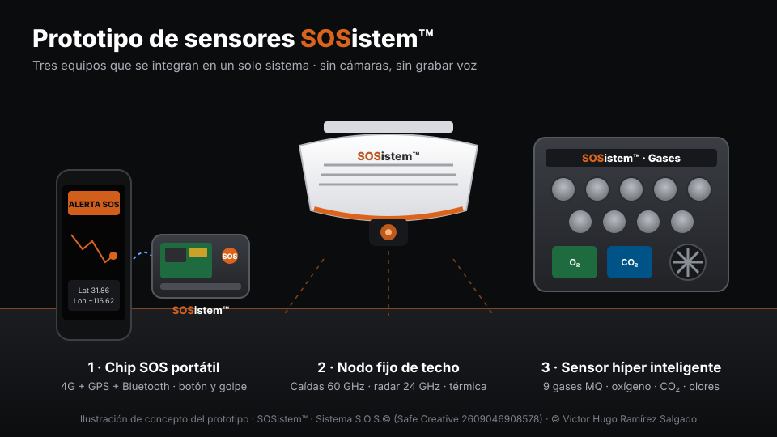
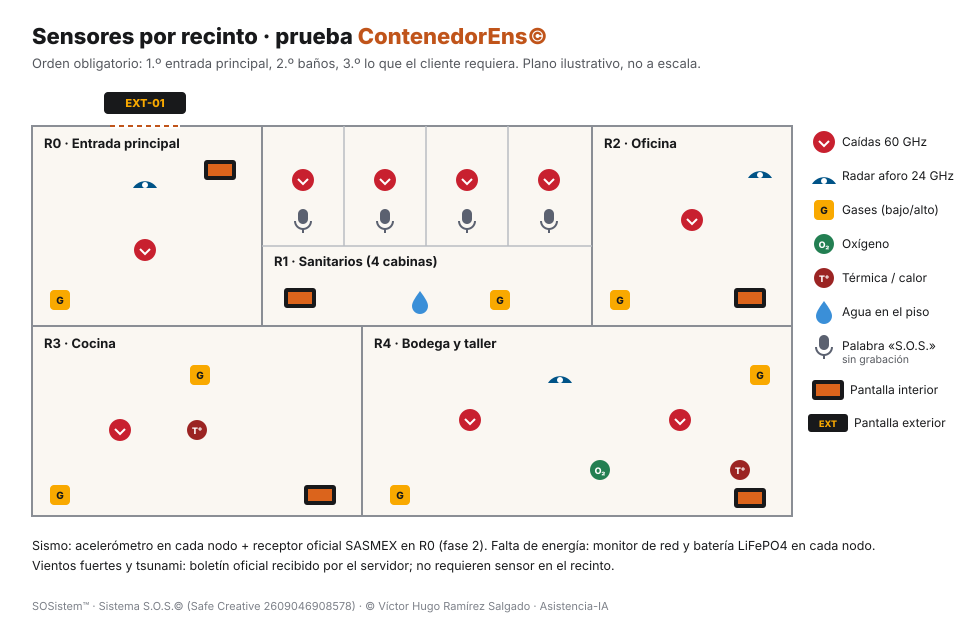
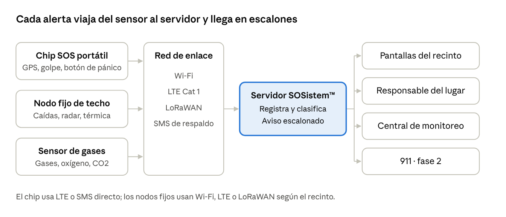

Prototipo de sensores para SOSistem™
Así se integran todos los sensores que ofrece sosistem.com en el servicio para recintos limitados, con tres equipos: el chip SOS portátil, el nodo fijo de techo y el sensor híper inteligente de gases, más las pantallas interior y exterior.

Los 14 riesgos que detecta el sistema
27 sensores en total. En los tres equipos van 20: radar de 60 GHz para caídas, radar de 24 GHz para aforo, cámara térmica sin imagen, acelerómetro, 9 sensores de gases MQ, oxígeno, CO₂, ambiente BME688, temperatura y humedad DHT22, agua en el piso, monitor de energía y micrófono que reconoce «S.O.S.» sin grabar. En la Terminal, el teléfono suma 7: micrófono (decibeles y voz de auxilio), acelerómetro, giroscopio, brújula, GPS, batería y luz ambiente (donde el equipo la tenga). Con ellos se cubren estos 14 riesgos, que dan los 12 servicios de SOSistem™.
Cada módulo de sosistem.com tiene un sensor en el prototipo o una vía oficial. Los marcados «Fase 2» se sustituyen por un sensor certificado antes de la venta.
| Módulo | Sensor en el prototipo | Equipo | Conexión al ESP32 | Dónde se instala | Estado |
|---|---|---|---|---|---|
| Persona caída | Radar 60 GHz C1001; confirma con cámara térmica MLX90640 | Nodo de techo | UART1 (GPIO 25/26) · I2C 0x33 | Techo, 2.7 m; una por cabina en sanitarios | Prototipo |
| Permanencia prolongada y aforo | Radar 24 GHz HLK-LD2450 (hasta 3 personas) + presencia del C1001 | Nodo de techo | UART2 (GPIO 16/17) | Pared, 1.5 a 2 m, viendo el acceso | Prototipo |
| Sismo | Acelerómetro MPU6050 en cada nodo; receptor oficial SASMEX en la entrada | Todos los nodos | I2C 0x68 | Fijo a muro estructural | Prototipo SASMEX fase 2 |
| Humo e incendio | MQ-2 (humo) + calor de la cámara térmica | Sensor de gases | ADS1115 0x48 | Cerca del techo | Prototipo Fotoeléctrico fase 2 |
| Inundación y agua en el piso | Sensor de agua de electrodos | Nodo (cable) | GPIO 35 (analógico) | Al ras del piso, en el punto más bajo | Prototipo |
| Falta de energía eléctrica | Monitor de red (divisor de voltaje) + batería LiFePO4 | Todos los nodos | GPIO 34 (analógico) | Dentro de cada nodo | Prototipo |
| Fuga de gas LP o natural | MQ-5 y MQ-6 (LP, abajo) · MQ-4 (natural, arriba) | Sensor de gases | ADS1115 0x48 / 0x49 | LP: 10–30 cm del piso · natural: cerca del techo | Prototipo Catalítico fase 2 |
| Monóxido de carbono | MQ-7 y MQ-9 | Sensor de gases | ADS1115 0x49 | A la altura de la respiración, ~1.5 m | Prototipo Electroquímico fase 2 |
| Falta de oxígeno | DFRobot Gravity SEN0465 (0–25 % vol.) | Sensor de gases | I2C | Altura de respiración; más abajo si el gas que desplaza el aire es pesado | Prototipo |
| Amoniaco, H₂S o hidrógeno | MQ-135 (amoniaco) · MQ-8 (hidrógeno) | Sensor de gases | ADS1115 0x49 / 0x4A | Cerca del techo (gases ligeros) | Prototipo H₂S fase 2 |
| Calor extremo | DHT22 · SCD40 · BME688 | Nodo y sensor de gases | GPIO 4 · I2C 0x62 · 0x76 | Lejos del radar (se calienta) y del sol directo | Prototipo |
| Vientos fuertes | Boletín oficial del SMN; anemómetro opcional en exterior | Servidor | Internet | No requiere sensor en el recinto | Servidor |
| Tsunami | Boletín oficial | Servidor | Internet | No requiere sensor en el recinto | Servidor |
| Palabra «S.O.S.» por voz | Micrófono digital I2S INMP441; reconoce la palabra en el equipo, sin grabar ni enviar audio | Nodo de techo | I2S (GPIO 12/13/14) | En cada cabina y recinto cerrado | Prototipo |
Los pines son la propuesta de diseño del prototipo; se confirman con el diagrama oficial de cada tarjeta antes de soldar. Fuentes de alcance y montaje al final de la página.
Sensores por recinto en un lugar limitado
Se instala en el orden obligatorio del sistema: primero la entrada principal, después los baños y al final los recintos que pida el cliente. Ejemplo con la prueba en ContenedorEns©.

| Recinto | Sensores | Pantalla | Módulos activos |
|---|---|---|---|
| R0 · Entrada principal (obligatorio) | Radar de aforo en el acceso, caídas, acelerómetro, receptor SASMEX (fase 2), gases | Interior PNL-E01 y exterior EXT-01 | Aforo, caída, sismo, eventos naturales |
| R1 · Sanitarios (obligatorio) | Una caída 60 GHz y un micrófono «S.O.S.» por cabina, amoniaco, agua en el piso | Interior PNL-A04 en el acceso | Caída, permanencia, voz, inundación, amoniaco |
| R2 · Oficina | Caída, radar de aforo, CO₂ | Interior PNL-A05 | Caída, aforo, calidad de aire |
| R3 · Cocina | Gas LP abajo, CO y humo, cámara térmica, caída | Interior PNL-A06 | Gas, CO, humo, calor, caída |
| R4 · Bodega y taller | Dos caídas, radar, gases abajo y arriba, oxígeno, cámara térmica | Interior PNL-B01 | Caída, gases, oxígeno, calor, aforo |
Cómo viaja una alerta

Pantalla interior
Va en el acceso de cada recinto y siempre está encendida: muestra el nombre del recinto, cuántas personas hay y, en una emergencia, qué hacer y por dónde salir.
Qué muestra
- Normal: nombre del recinto rotando en su idioma, Morse, braille, señas y banderas; aforo «N de máximo»; pictogramas ISO 7010.
- Persona caída: aviso N0 en la cabina y plano detallado de sanitarios para el auxilio.
- Sismo o evento natural: pantalla dividida, salidas de emergencia a la izquierda y conteo de personas a la derecha; en celular se apilan.
- Gas, oxígeno o humo: aviso con el color de seguridad, la acción a seguir y la ruta.
- Luz y buzzer en Morse solo en emergencia o en prueba del administrador.
Prototipo propuesto
- Pantalla táctil de 7 pulgadas, 800 × 480, con ESP32-S3 integrado; o tableta o iPad con la Terminal de sosistem.com.
- Conexión: Wi-Fi al nodo del recinto y al servidor; Bluetooth para configurar.
- Energía: 5 V y batería de respaldo LiFePO4 para seguir avisando en un corte de luz.
- Montaje: en el acceso, a la altura de la vista, sin tapar señalización existente.
Pantalla exterior EXT-01
Va en el acceso principal, por fuera. Está apagada por defecto y se enciende sola con un sismo o un evento natural, o si el cliente la deja encendida.
Qué muestra
- «Sismo en curso · no ingrese al recinto» o el aviso del evento natural.
- Mensaje del cliente y, si lo autoriza, el número de personas dentro (solo conteo, sin identidad).
- Punto de reunión y flecha hacia él.
- Texto que se desplaza en el idioma del lugar y en inglés.
Prototipo propuesto
- Dos paneles LED RGB para exterior P5 de 64 × 32 puntos (320 × 160 mm cada uno), controlados por un ESP32.
- Lectura: con paso de 5 mm se lee bien a partir de unos 5 m (regla práctica de 1 m por cada mm de paso).
- Gabinete para exterior IP65 con ventilación y visera contra el sol.
- Energía: fuente de 5 V de al menos 4 A por panel; respaldo para el aviso de sismo.
- Montaje: sobre el acceso principal, a unos 2.5 m.
Piezas que se suman para integrar todo
Además del chip, el nodo y el sensor de gases, la integración completa en recintos limitados agrega estas piezas por recinto.
| Pieza | Módulo que cubre | Cantidad |
|---|---|---|
| Acelerómetro MPU6050 | Sismo | 1 por nodo |
| Sensor de agua de electrodos | Inundación | 1 por baño, cocina o bodega |
| Micrófono I2S INMP441 | Palabra «S.O.S.» | 1 por cabina o recinto cerrado |
| Celda LiFePO4 + cargador y divisor de voltaje | Falta de energía | 1 por nodo y pantalla |
| Pantalla interior de 7 pulgadas con ESP32-S3 | Pantalla interior | 1 por recinto |
| Paneles LED P5 para exterior + gabinete IP65 | Pantalla exterior | 1 juego por lugar |
Las piezas y su número se definen según las necesidades de cada recinto.
Fuentes
- DFRobot. (s. f.). C1001 60GHz mmWave indoor fall detection sensor (SEN0623). Core Electronics. https://core-electronics.com.au/c1001-60ghz-mmwave-fall-detection-sensor-arduino-esp32-microbit.html
- Hi-Link. (s. f.). HLK-LD2450 motion target detection and tracking module [Manual]. https://manuals.plus/hi-link/hlk-ld2450-motion-target-detection-and-tracking-module-manual
- CO2Meter. (s. f.). Gas safety alarm mounting height chart. https://www.co2meter.com/blogs/news/gas-safety-alarm-mounting-height-chart
- Kele. (2009, 5 de agosto). How many square feet does a gas sensor cover? https://www.kele.com/content/blog/2009/08/05/how-many-square-feet-does-a-gas-sensor-cover
- Semtech. (s. f.). Characteristics of LoRaWAN. https://learn.semtech.com/mod/page/view.php?id=137
SOSistem™ · Sistema S.O.S.© (Safe Creative 2609046908578) · Sensor híper inteligente SOSistem™ (2610317507499) · © Víctor Hugo Ramírez Salgado, autor y titular · Asistencia-IA · Prototipo en revisión, no es la versión publicada.